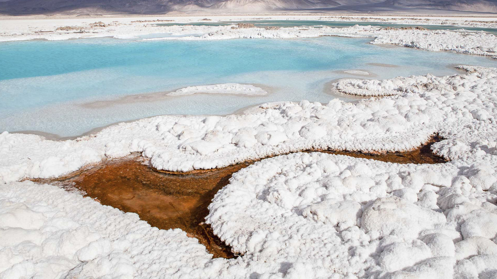
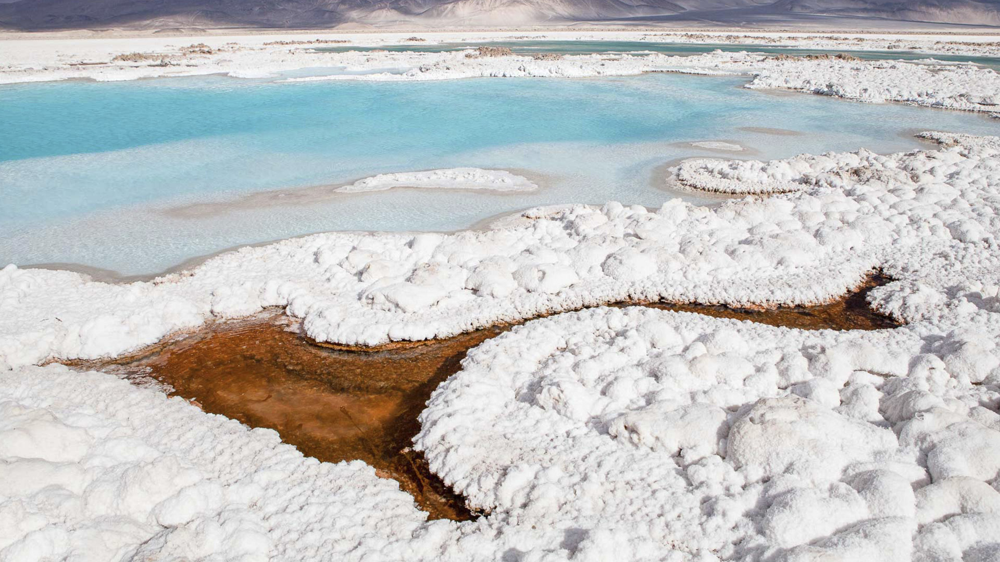
 360º - Campo de Piedra Pomez
360º - Salar de Antofalla
360º - Dunas del Peñon
360º - Duna Difunta Correa
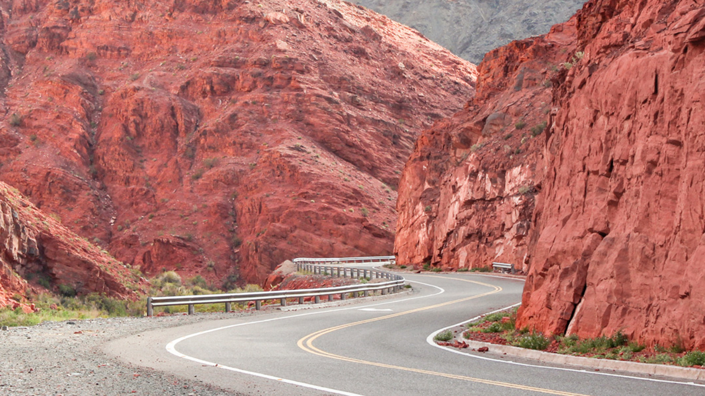
Belén
Andalgalá
Pomán
Tinogasta
Santa Maria
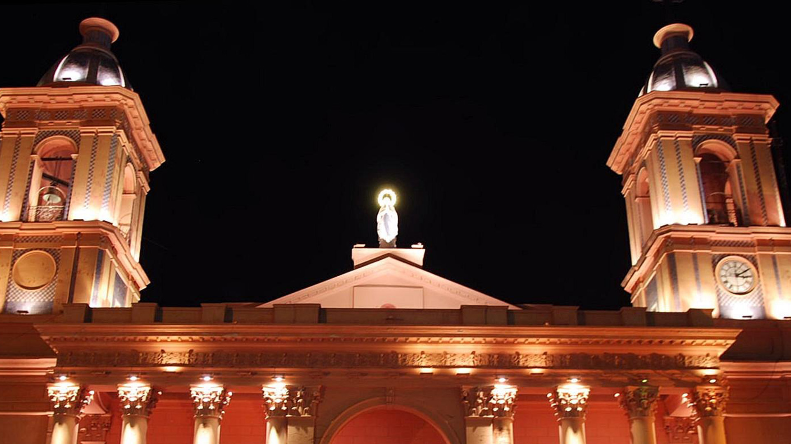
Capital - SFVC
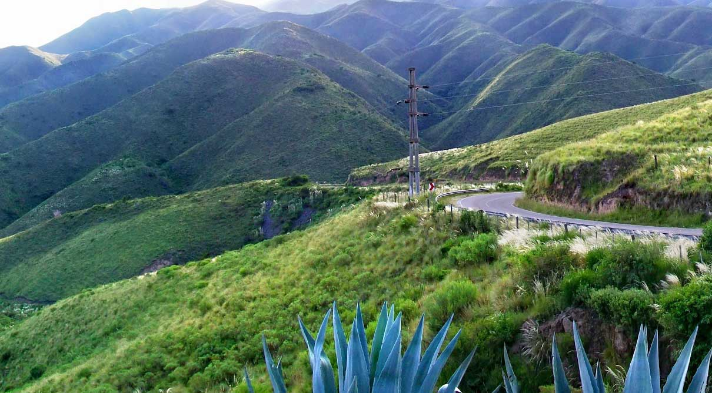
Paclín
Fray M. Esquiu
Valle Viejo
Capayán
Ambato
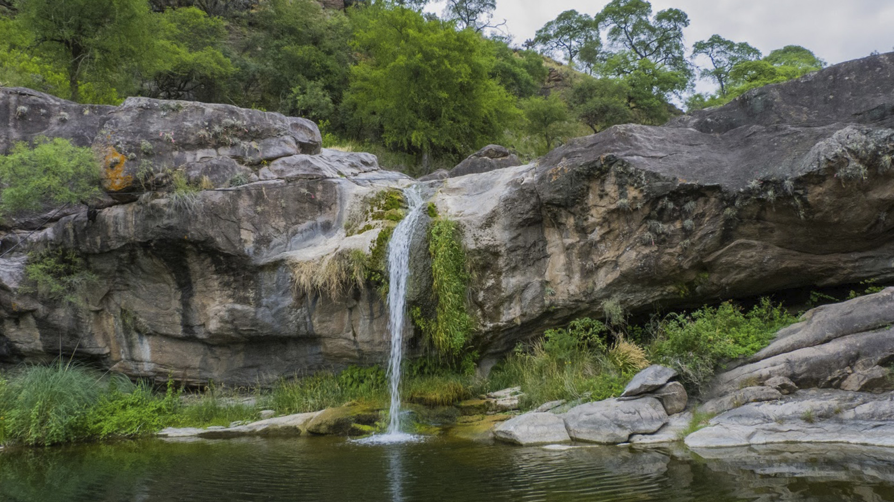
360º - Campo de Piedra Pomez
360º - Salar de Antofalla
360º - Dunas del Peñon
360º - Duna Difunta Correa
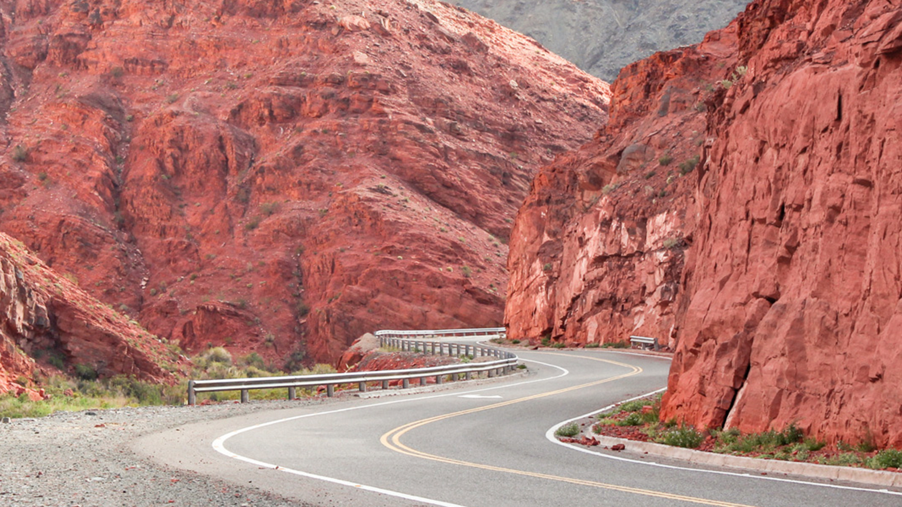
Belén
Andalgalá
Pomán
Tinogasta
Santa Maria
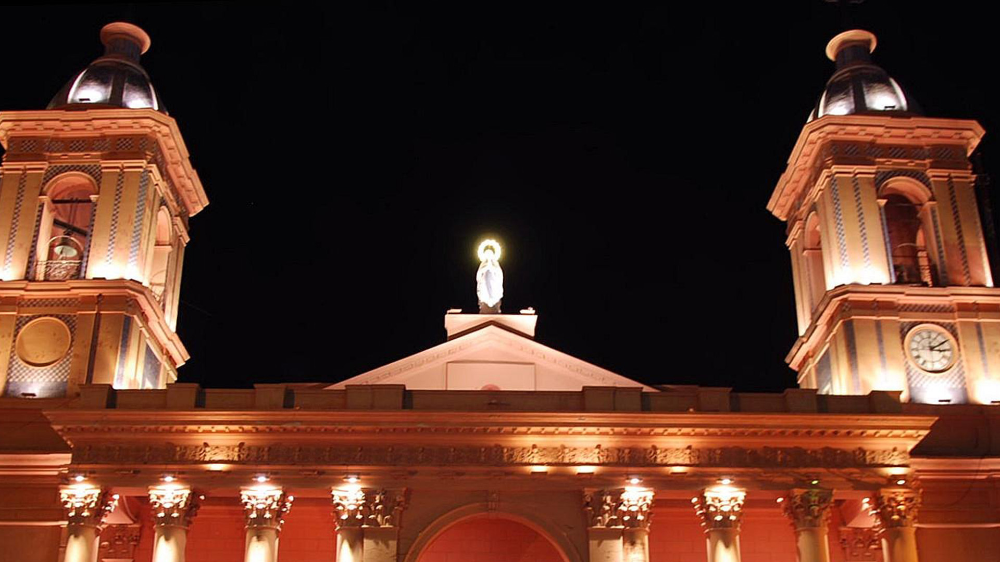
Capital - SFVC
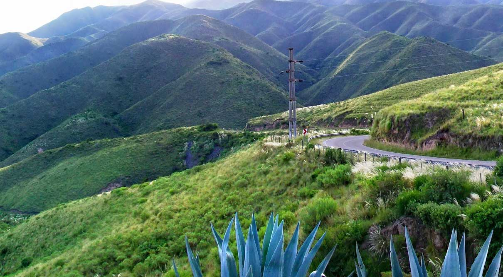
Paclín
Fray M. Esquiu
Valle Viejo
Capayán
Ambato
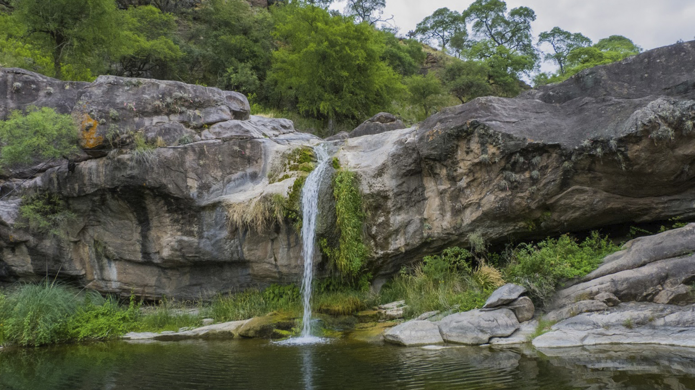
 El Alto
La Paz
Ancasti
Santa Rosa
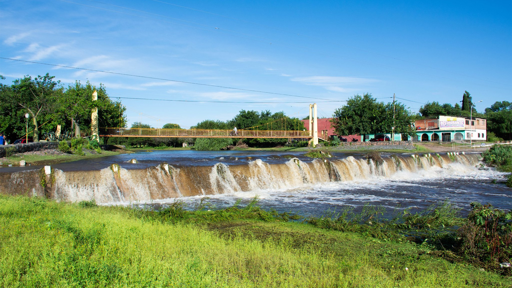
La Paz
El departamento La Paz es uno de los 16 departamentos que componen la Provincia de Catamarca, Argentina, ubicado en la región sud-este de la provincia, dista a 100 km de San Fernando del Valle de Catamarca, a 235 km de Córdoba y a 940 km de Buenos Aires. Con una superficie de 8149 km² es el cuarto más extenso de la provincia, y con una población de 23.262 habitantes. Su cabecera o capital y ciudad más grande es Recreo donde se concentran la mayoría de las industrias y eventos culturales más concurrentes.
El Alto
La Paz
Ancasti
Santa Rosa
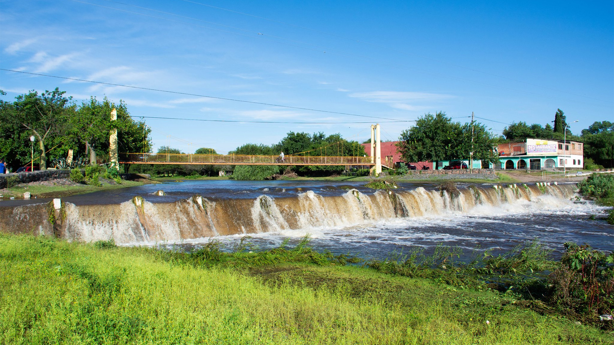
La Paz
El departamento La Paz es uno de los 16 departamentos que componen la Provincia de Catamarca, Argentina, ubicado en la región sud-este de la provincia, dista a 100 km de San Fernando del Valle de Catamarca, a 235 km de Córdoba y a 940 km de Buenos Aires. Con una superficie de 8149 km² es el cuarto más extenso de la provincia, y con una población de 23.262 habitantes. Su cabecera o capital y ciudad más grande es Recreo donde se concentran la mayoría de las industrias y eventos culturales más concurrentes.
Limita al norte con la provincia de Santiago del Estero y el departamento El Alto, al oeste con los departamentos Ancasti y Capayàn, al sur con las provincias de La Rioja y Córdoba y al este con la provincia de Santiago del Estero.
360º - Salinas Grandes
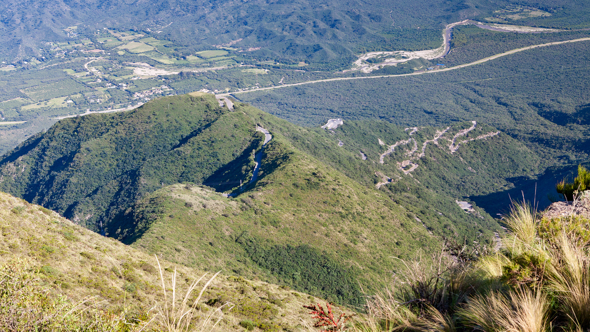
Valle Viejo
Valle Viejo es uno de los 16 departamentos en los que se divide la provincia de Catamarca en Argentina. Está constituido por un único municipio homónimo y forma parte del aglomerado urbano Gran San Fernando del Valle de Catamarca.
Catastralmente se divide en 10 distritos: San Isidro, Villa Dolores, Santa Rosa, Sumalao, Portezuelo, Polcos, Huaycama, Las Tejas, Los Puestos y Santa Cruz.
360º - Hosteria Cuesta De El Portezuelo
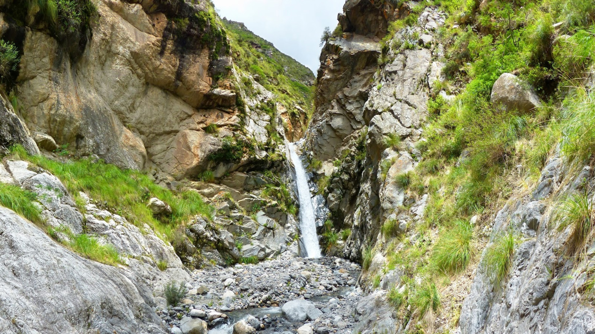
Pomán es un departamento de la provincia de Catamarca en Argentina que cuenta con 4859 km². Su población es de 10.776 hab. (Censo 2010, INDEC). Está ubicado en la falda Oeste de las Sierras de Ambato, a una altura que oscila entre 700 y 1600 m s. n. m..
Administrativamente se divide en 9 distritos: Saujil, Rincón, Pomán, Siján, Joyango, San Miguel, Mutquín, Rosario de Colana y Colpes.
Pomán
360º - Quebrada de la Cébila
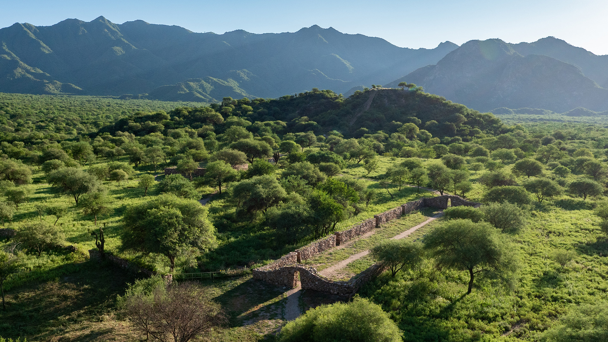
Belén
Belén es una ciudad de la provincia argentina de Catamarca, y capital del departamento Belén.
Se ubica al sudoeste del departamento entre los km 4089 y 4092 de la Ruta Nacional 40, en un valle semiárido surcado por el Río Belén.
360º - Londres Ruinas del Shincal
360º - Pozo de Piedra
360º - Virgen de Belen
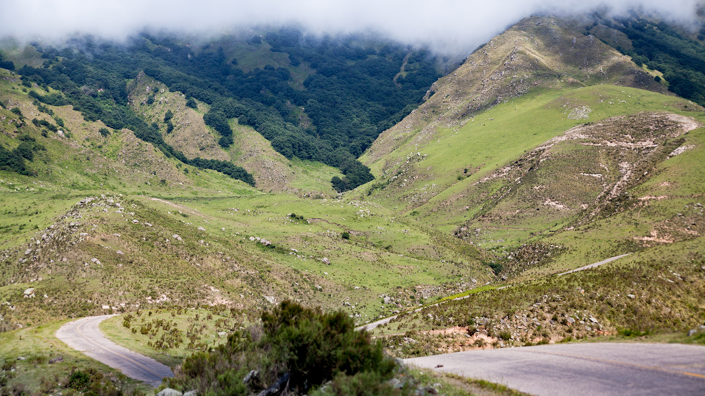
Andalgalá
El departamento posee 4497 km² y limita al norte con el departamento Santa María, al este y nordeste con la provincia de Tucumán, al oeste con el departamento Belén y al sur con los departamentos de Ambato y Pomán.
Administrativamente se divide en 14 distritos: Plaza, Malli 1º, Malli 2º, Villavil, Chaquiago, Minas Capillitas, Cóndor Huasi, Huachaschi, Huaco, Potrero, Amanao, Aconquija y Espinillo.
Una de las versiones más aceptadas indica que el nombre proviene de la combinación de la palabra quichua "anta" que significa cobre y del nombre del cacique que dominaba la región a la llegada de los españoles, "Guala" o "Hualán".
360º - Andalgala
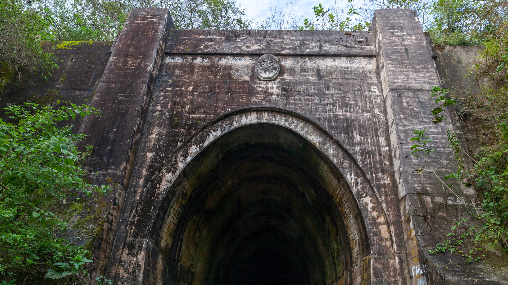
Paclín
Paclín es un departamento de la provincia de Catamarca en Argentina. El departamento está constituido con un único municipio homónimo. Tiene una superficie de 985 km².
Administrativamente se divide en 7 distritos: La Merced, Balcozna, Sumampa, Amadores, La Bajada, El Rosario y Paclín.
El nombre del departamento proviene de la expresión en lengua cacán pakilingasta, en donde «pakilin» significa «costa partida en dos» y «gasta» es el sufijo genérico que refiere a «pueblo».
360º - Balcozna, El Saltón
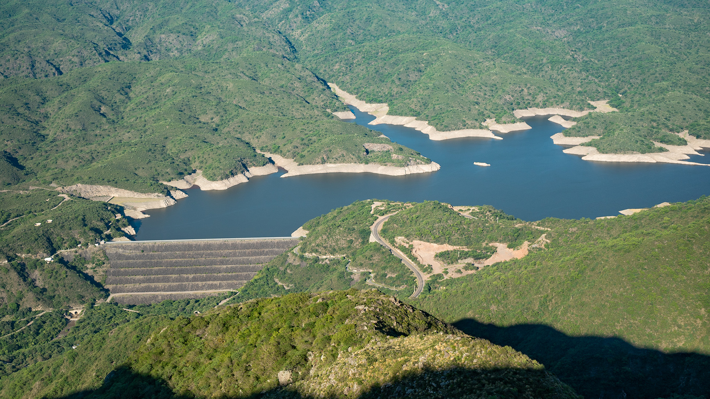
Fray Mamerto Esquiú
Fray Mamerto Esquiú es un departamento de la provincia de Catamarca en Argentina. El departamento está constituido por un único municipio homónimo.
Se divide en 7 distritos: San José, San Antonio, El Hueco, La Tercena, La Carrera, Collagasta y Pomancillo.
En varios puntos del departamento se han hallado evidencias de la presencia de comunidades pertenecientes a la cultura de la Aguada. Se trata de restos de cerámica, algunos vestigios de construcciones y un alero con pinturas rupestres.
360º - Dique Las Pirquitas
360º - Campanas Del Rosario
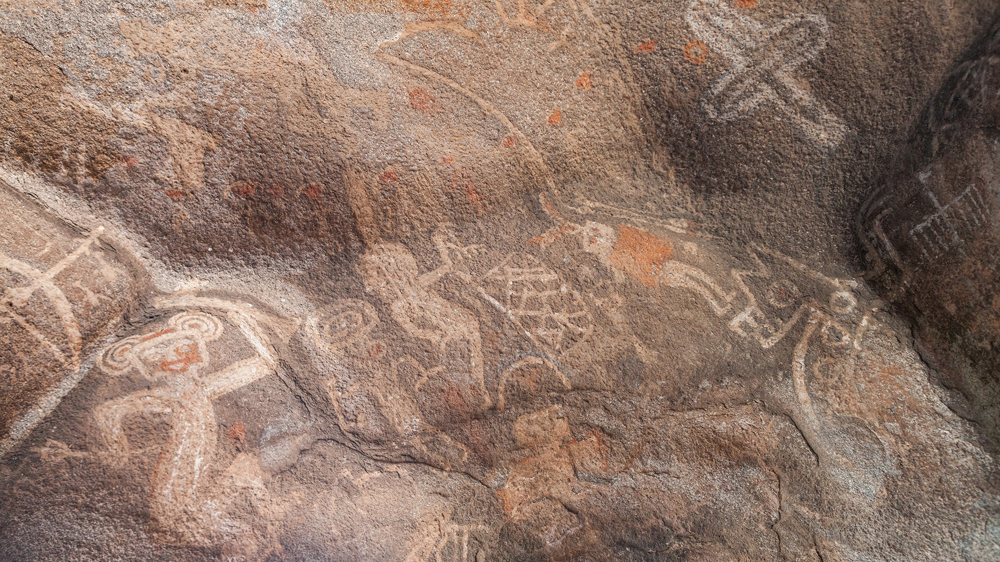
Ancasti
Ancasti es un municipio del este de la provincia argentina de Catamarca, ubicado a 82 km al este de la capital provincial San Fernando del Valle de Catamarca. En esta localidad nacieron en 1873 Ramón S. Castillo, 25° presidente de la Nación Argentina entre 1942 y 1943, y en 1809 Eulalia Ares, que sería en 1862 la primera mujer gobernadora de Catamarca y de la historia argentina.
El nombre en Quechua significa ‘nido de águilas’ La palabra ANCASTI tiene diversas aceptaciones, entre ellas se debe indicar que la de Pedro Bazán dice que debe proceder de la palabra CATA, falda o ladera del Cerro. AN CATA en vez de ANCASTE o ANCASTA, sería la ladera alta del Cerro.
360º - Dique de Ipizca
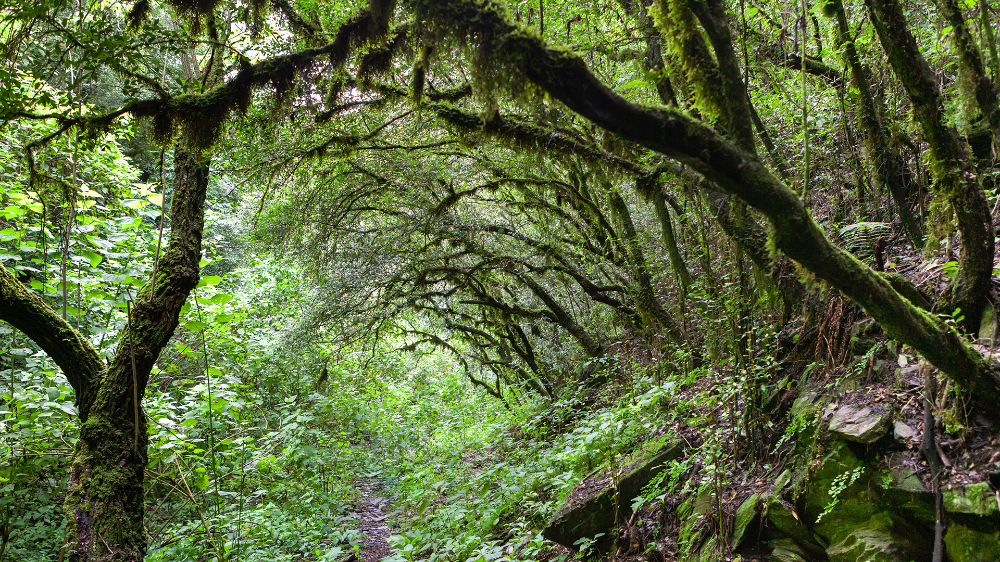
Capayán
Capayán es un departamento en la provincia de Catamarca en Argentina. Su nombre deriva de la antigua parcialidad pazioca ("diaguita") de los capayanes. El departamento tiene una superficie de 4284 km².
Administrativamente se divide en 12 distritos: Capayán, Huillapima, Los Ángeles, Concepción, Colonia Nueva Coneta, Miraflores, San Pedro, Coneta, Colonia del Valle, Puestos del Sur, Chumbicha y Puestos del Norte.
360º - Iglesia San Pablo
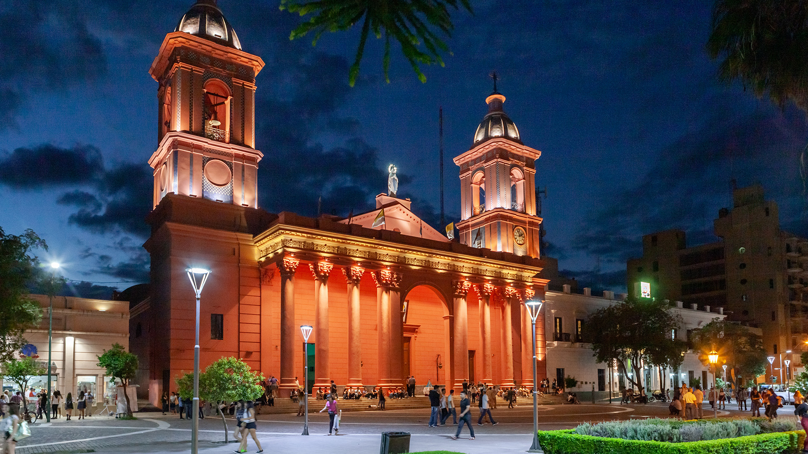
San Fernando del Valle
San Fernando del Valle de Catamarca, oficialmente Ciudad de San Fernando del Valle de Catamarca, es la capital de la provincia argentina de Catamarca y la ciudad cabecera de su departamento Capital. Se trata de un centro comercial y turístico. Además cuenta con una activa vida cultural, que se desarrolla en su universidad, instituciones y museos.
Se encuentra a orillas del río del Valle y al pie de la Sierra de Ambato y de la Sierra de Ancasti, tiene 399 km² y se halla a 550 msnm. Cuenta con 159.139 habitantes.
360º - Pueblo Perdido
360º - Predio Ferial
360º - Dique Jumeal
360º - Catedral Basilica
360º - La Gruta
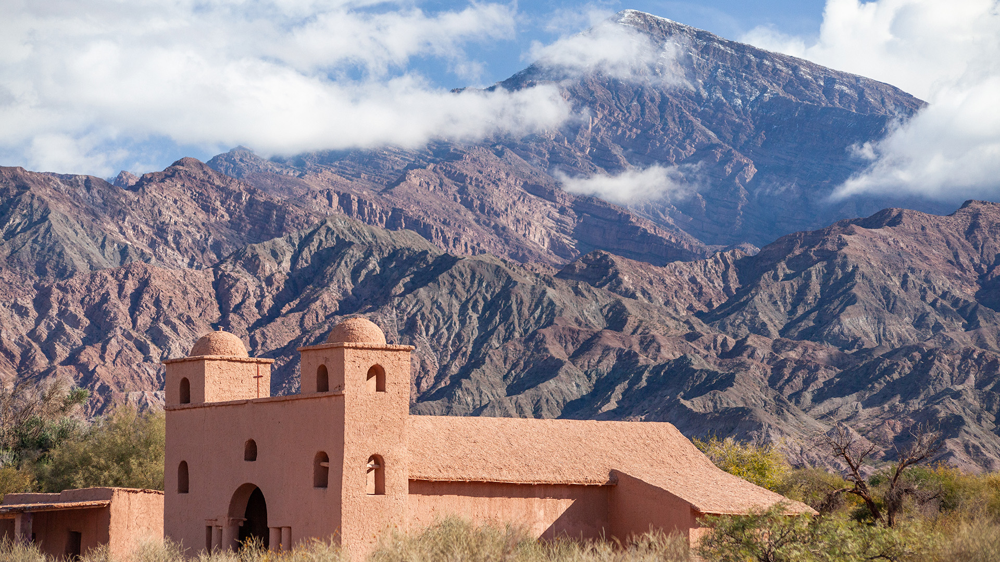
Tinogasta
Tinogasta es uno de los 16 departamentos en los que se divide la provincia de Catamarca en Argentina.
Administrativamente se divide en 12 distritos: Tinogasta, Fiambalá, Saujil, El Puesto, La Puntilla, San José, Copacabana, Costa de Reyes, Anillaco, Salado, Cerro Negro, Colorado.
360º - Dunas de Saujil
360º - Fiambala Termas
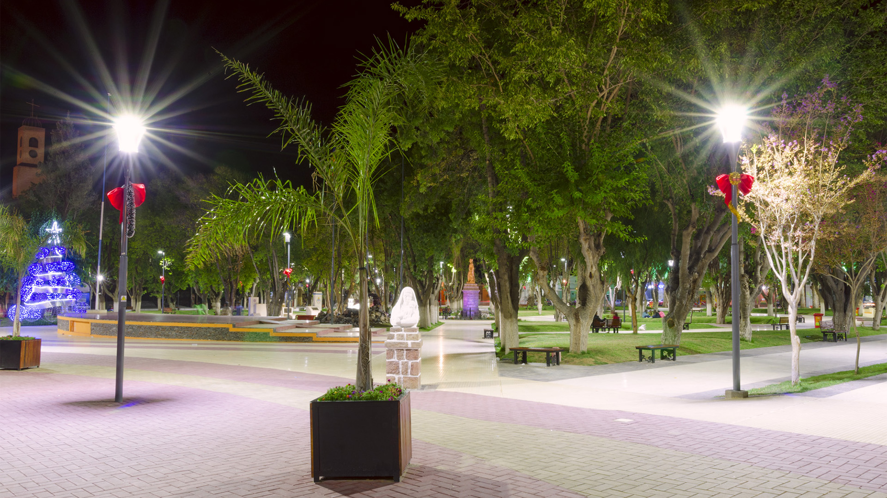
Santa María
Santa María es la ciudad capital del departamento homónimo, en el centro este de la provincia argentina de Catamarca; sobre la margen derecha del río Santa María; a 332 km de la capital provincial San Fernando del Valle de Catamarca.
También es considerada la capital de los Valles Calchaquíes.
360º - Cerro de Los Colores
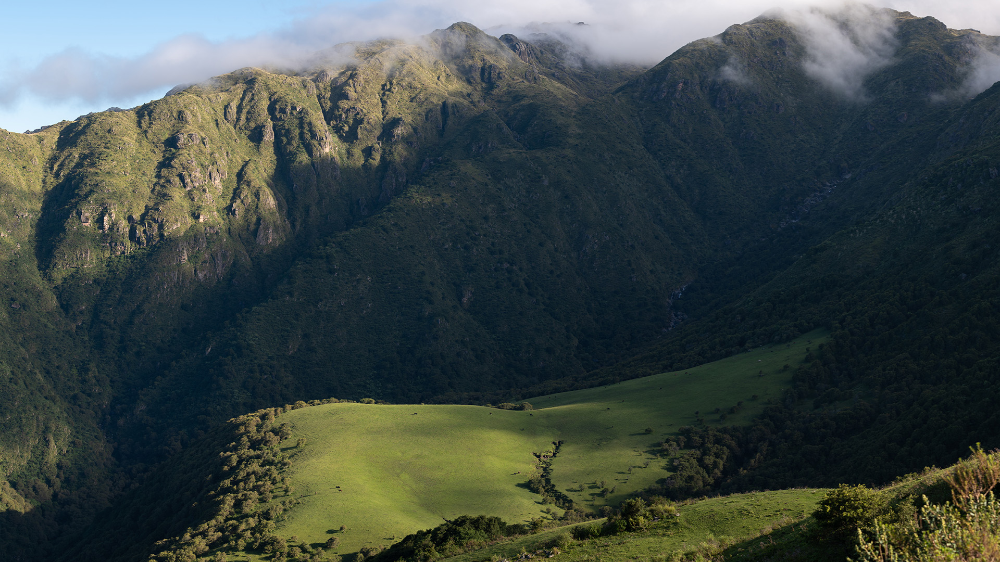
Ambato
A solo media hora en vehículo desde la ciudad capital se llega a Ambato. Este departamento cuenta con un microclima húmedo, ideal para escaparse de la capital en verano, ya que su temperatura anual media es de 18ºC.
Etimológicamente, Ambato deriva del quechua Hamppatu o Ampatu, que significa “Cerro Sapo”, según Lafone Quevedo, y la cabecera departamental es la localidad de La Puerta.
360º - El Rodeo
360º - Las Juntas
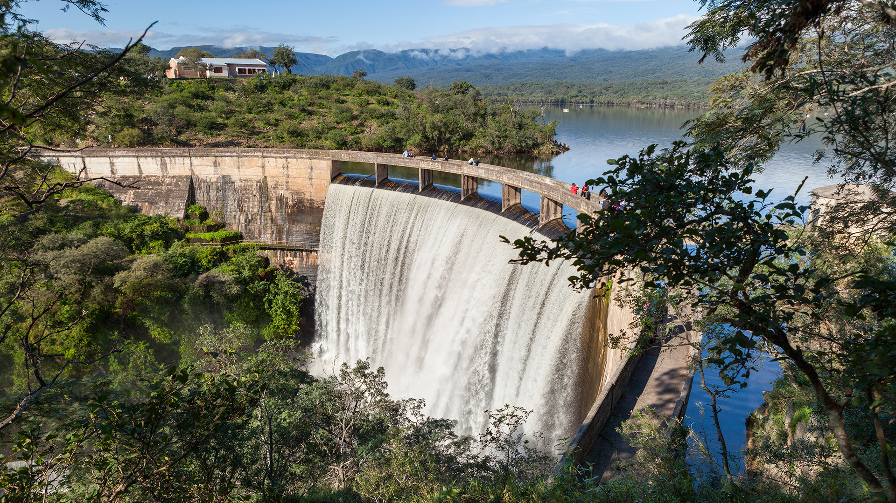
Santa Rosa
El departamento Santa Rosa alberga el municipio Los Altos. Esta localidad, es agrícola ganadera que se encuentra ubicada a 78 km aproximadamente de la Ciudad Capital, sustentando su economía en la producción agropecuaria del cultivo de soja, maíz, tabaco, citrus y arándanos.
360º - Ciudad de Las Cañas
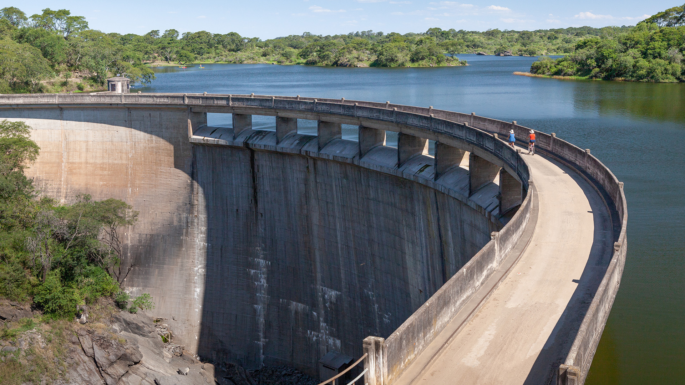
El Alto
El Departamento El Alto se encuentra ubicado al Este de la Provincia sobre una importante porción de la continuidad de las Sierras de Ancasti, a unos 81 km aproximadamente de la ciudad Capital.
La Villa El Alto se encuentra situada a 950 m.s.n.m, es la cabecera del Departamento.
También es considerada la capital de los Valles Calchaquíes.
360º - El Chorro